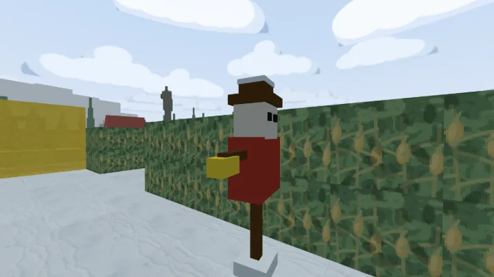
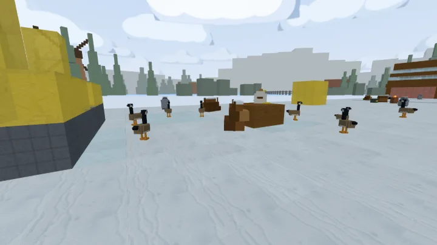
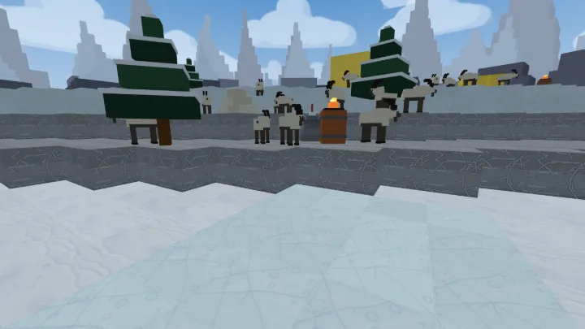
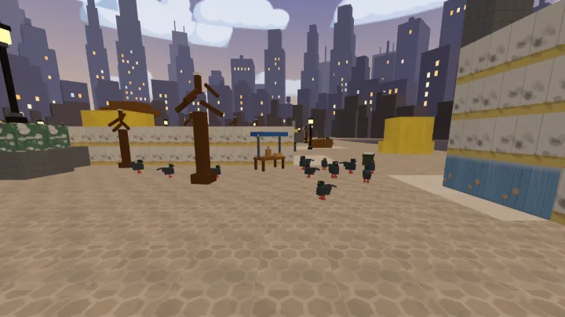
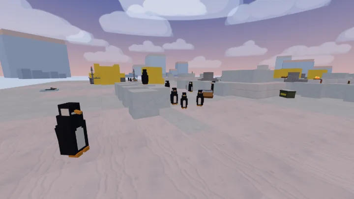

Zero install
Your IT team locks down .exe installers? Farmyshoot runs in Chrome, Safari, Firefox and Edge. Nothing to download, ever.
Share a link
Host clicks "New game". Everyone else pastes the 6-character room code. Full teams up and playing before the standup ends.
Works on any device
Corporate laptop, personal phone, tablet — same game, same room, no cross-platform launcher nonsense. Touch controls built in.
No account
Optional Sign in with Google to remember your name across games. Everything else works without ever collecting your details.
Bots on demand
Only 2 people online? Add up to 15 AI bots to fill both teams. Farmyshoot plays great from 2 to 16 players, in any mix of people and bots.
Fair, not sweaty
Farm animals (cow, chicken, pig, sheep). Poo-slinging shovels. Ice-slippery physics. Slingshot chicken super-weapon. Nobody feels bad about losing to a chicken.
What it looks like



Five places, all built from a number
Every map is generated from a seed, so the same seed always builds the same world — and everybody in the room is standing in the same one. These are the game's own camera, lights, fog and sky.




Frequently asked
Is it really free?
Yes. Free, no ads, no signup required. Sign in with Google is optional and only remembers your player name.
Does it need a server or installer?
Neither. Farmyshoot is peer-to-peer over WebRTC. All the players' browsers talk to each other directly. Nothing installs.
Will it work on my company's locked-down browser?
If your browser can open this link, yes. Chrome, Edge, Firefox, Safari, on Windows, Mac, or a Chromebook — all fine.
How many people can play?
2 to 16 humans. Below 4 you can pad the teams with AI bots.
Can I play on a phone?
Yes — touch controls are built in, and a phone can join the same room code as a laptop. If you want something keyboard-only and single-player instead, try Zelakas In Space.
Is my data collected?
No game server, and nothing tied to you unless you ask us to save your progress. We count anonymous, cookieless page views and match results (map, mode, bot count) so we know which parts of the game people play. See our privacy notes.
Ready to be a chicken with a slingshot?
Play Farmyshoot now